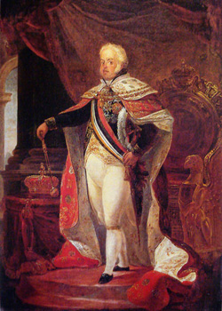
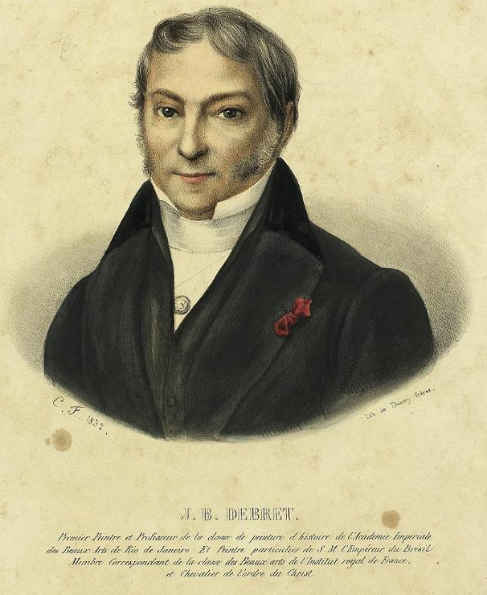
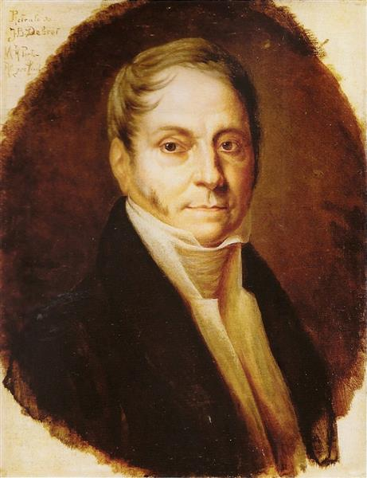
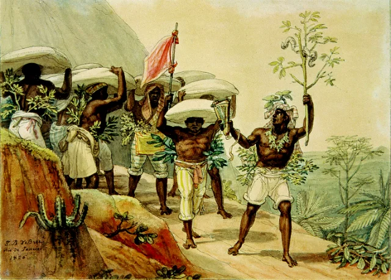
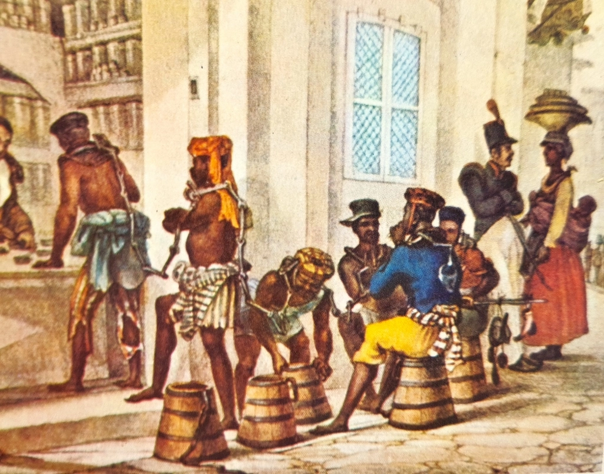
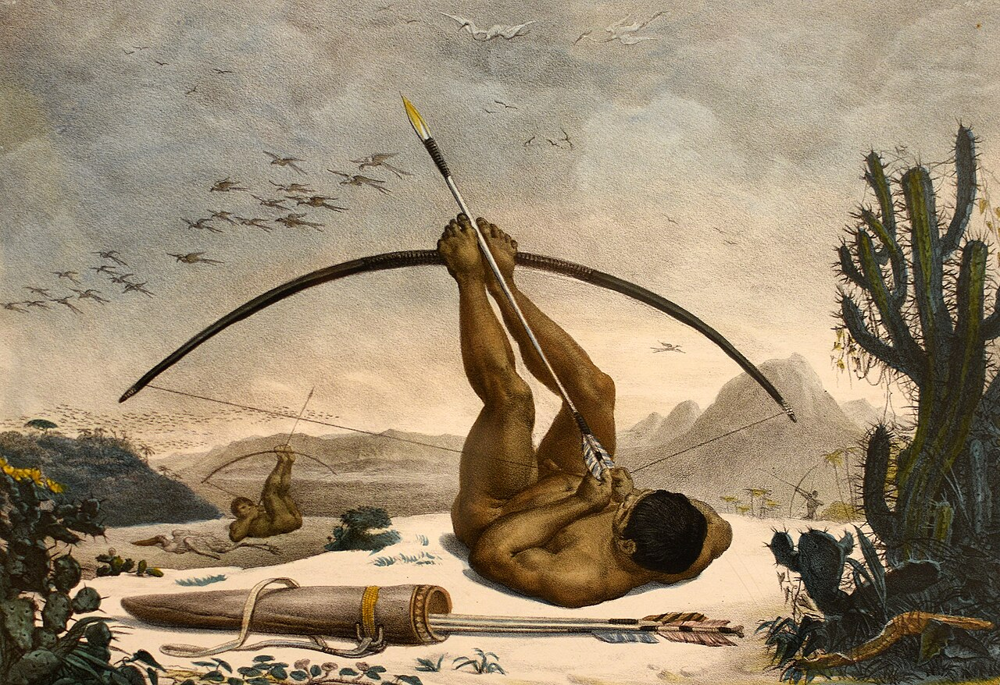
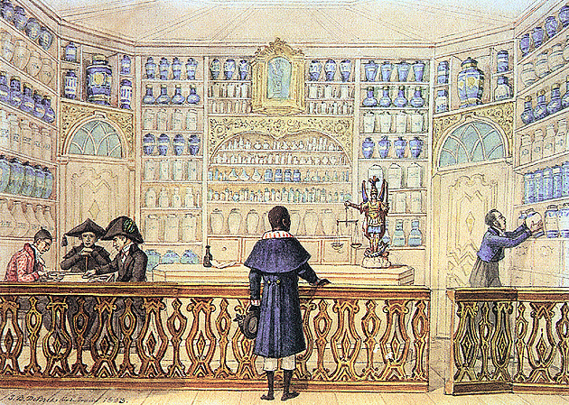
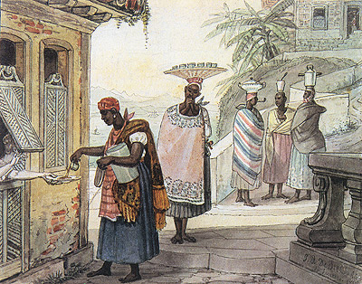
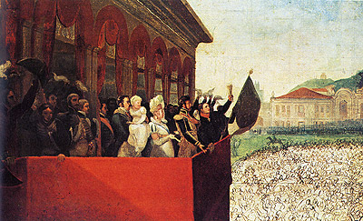
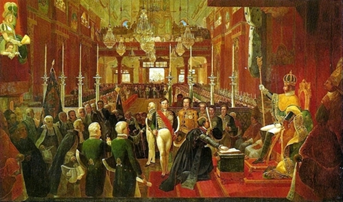

Debret
Antes do Brasil
Jean-Baptiste Debret (1768-1848) foi um renomado artista francês, nascido em Paris. Debret desempenhou um papel significativo no desenvolvimento das artes no país, contribuindo não apenas com sua habilidade artística, mas também com sua capacidade de observação aguda.
  
Em 1806, Debret iniciou suas obras dedicadas à glória de Napoleão, encomendadas por Vivant-Denon, diretor de
museus.
Em 1814, com a queda de Napoleão, Debret perdeu o seu principal financiador.
Pouco depois, Debret recebeu duas propostas, uma do czar Alexandre I, que o convidou para trabalhar em São
Petersburgo, e outra de Lebreton, que o chamou para integrar a missão artística francesa no Brasil, conforme
solicitação do príncipe regente D. João. Decidido a participar da missão francesa, Debret embarcou para o
Brasil.
Chegada no Brasil

Debret chegou ao Brasil em 1816 como integrante da Missão Artística Francesa, enviada por Dom João VI.
A missão tinha o propósito de impulsionar o desenvolvimento das artes no país recém-independente de
Portugal.
Junto aos membros da missão, Debret desembarcou no Rio de Janeiro. Seu objetivo principal era promover o
ensino das artes plásticas, arquitetura e escultura.
Ao longo de sua estadia no Brasil, que se estendeu até 1831, Debret não apenas lecionou na Escola Real de Ciências, Artes e Ofícios, mas também dedicou-se intensamente à produção de suas notáveis aquarelas, documentando a vida e a cultura brasileira da época.
 Pinturas famosas
Caboclo
"Caboclo", de Jean-Baptiste Debret (1768-1848) retrata um mestiço que, a rigor, já teria deixado a vida selvagem e aderido à civilização, mas esses limites talvez fossem muito difíceis de se ver no Brasil, em especial aos olhos de um francês.
Botica
Na aquarela intitulada Botica, que ilustra a capa desta edição do Jean Baptiste Debret, ele retratou uma drogaria ou farmácia da época. Como de hábito, os fregueses ali chegavam não apenas para adquirir medicamentos, mas também por lazer. Jogavam gamão ou simplesmente passavam o tempo em conversas sem compromisso. Um escravo de família abastada, usando libré azul com gola vermelha e branca, espera o remédio que está sendo manipulado pelo boticário. Na cena retratada, detalhe para os potes clássicos das boticas do século 18 e a balança na mão da imagem de São Miguel.
Caffé (sic) Torrado
São exemplos relacionados ao café que mostram a precisão que podemos ter dos usos e costumes daquele momento histórico. Com suas obras, somos praticamente transportados para o Rio de Janeiro do século XIX.
Aclamação de D.Pedro
Assim, as celebrações no Rio de Janeiro da Independência do Brasil, cujos 200 anos se comemoram agora, não poderiam passar longe do lápis de Debret. Ele criou a imagem da aclamação de D. Pedro I, que ocorreu em 12 de outubro de 1822, bem como da coroação do novo imperador, em 1 de dezembro do mesmo ano, e pintou um pano de boca (tela que ocupa toda a boca de cena de um teatro, à frente da cortina) para marcar o novo momento da história.
Coroação de D.pedro I
“Coroação de D. Pedro I” (1828) é uma das famosas aquarelas do pintor francês Jean-Baptiste Debret, que compõem o livro Viagem Pitoresca e Histórica ao Brasil, considerado por alguns autores a mais rica revelação feita sobre o comportamento e o modo de ser das diversas classes sociais brasileiras da época.
Viagem Pitoresca
Seu livro “Viagem pitoresca e histórica ao Brasil”, publicado de 1834 a 1839 em três volumes, retrata o
Brasil durante o período imperial. Debret, documentou com precisão cenas cotidianas, costumes e paisagens
brasileiras, oferecendo um olhar estrangeiro sobre a sociedade da época.
Suas ilustrações capturam a diversidade cultural, desde as festividades até a vida urbana e rural,
proporcionando um valioso registro histórico e artístico do Brasil no século XIX.
A coleção de Debret abrange temas diversos, incluindo cenas de rua, festas populares, escravidão e
atividades econômicas.
Um aspecto notável da Viagem Pitoresca é a abordagem crítica de Debret em relação á escravidão.
Suas imagens
retratam de maneira contundente a brutalidade e a desumanização sofridas pelos escravos.
Portanto, a Viagem Pitoresca é mais do que uma simples coleção de imagens, é um testemunho visual, que
proporciona uma janela para o Brasil do século XIX.